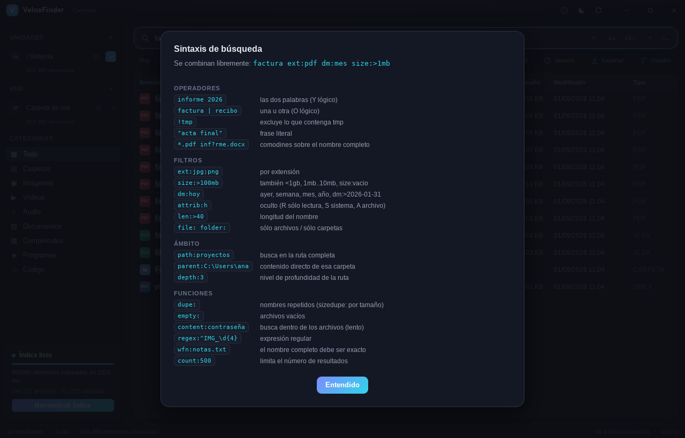

Indexado instantáneo
Lee la tabla maestra de archivos ($MFT) del volumen NTFS directamente, sin recorrer carpetas.
Buscador de archivos instantáneo · Windows y Linux · MIT
VeloxFinder lee la tabla maestra de NTFS y construye el índice de un disco con dos millones de archivos en segundos. A partir de ahí, cada tecla que pulsas devuelve resultados en menos de 25 milisegundos. Clon libre de Everything, con interfaz moderna y versión para Linux.
| Nombre | Ruta | Tamaño | Modificado | Tipo |
|---|
Demostración en el navegador con una muestra de archivos ficticios. La aplicación real hace lo mismo sobre millones de archivos de tu disco.
Qué hace
No es una promesa de marketing: es lo que ocurre cuando el índice vive en memoria, ocupa 24 bytes por archivo y no hay que abrir una sola carpeta para construirlo.
Lee la tabla maestra de archivos ($MFT) del volumen NTFS directamente, sin recorrer carpetas.
Vigila el diario de cambios de NTFS: si creas, mueves o borras un archivo, la lista se corrige sola.
Tema claro y oscuro, vista previa de imágenes y texto, resaltado de coincidencias y modo compacto.
Cada unidad tiene su lista. Copias de seguridad, máquinas virtuales o node_modules: fuera del índice.
Rutas UNC y unidades asignadas, con refresco periódico para que no se queden atrás.
Comodines, expresiones regulares, filtros por tamaño, fecha, atributos, duplicados y búsqueda dentro de los archivos.
Paquete .deb para Debian, Ubuntu y derivadas, o binario portátil sin instalar nada.
Un solo ejecutable que puede vivir en un pendrive sin escribir nada en el registro, y que no envía datos a ninguna parte.
Sintaxis de búsqueda
Los operadores se combinan libremente:
factura ext:pdf dm:mes size:>1mb.
Pulsa F1 dentro de la aplicación para tener la chuleta a mano —
o prueba aquí mismo las marcadas con ▸, que se ejecutan en la demostración de arriba.
size:<1gb, size:1mb..10mb, size:vaciodm:>2026-01-31sizedupe: por tamaño)
La chuleta completa, dentro del programa. Operadores, filtros, ámbito y funciones, siempre a un F1 de distancia.
Cómo funciona por dentro
NTFS guarda un registro de 1 KiB por archivo en una tabla llamada MFT.
VeloxFinder abre el volumen (\\.\C:) y la lee entera: un hilo trae bloques
de 16 MiB mientras el resto de núcleos los analiza. De ahí salen nombre, carpeta
padre, tamaño, fechas y atributos sin haber abierto una sola carpeta.
Los nombres viven en un único búfer contiguo y cada entrada guarda sólo desplazamientos. Al lado hay un array de 8 bytes por entrada —máscara de los caracteres del nombre, longitud y tipo— que es lo único que recorre el bucle de búsqueda: si a la consulta le falta un carácter que la máscara no tiene, la entrada se descarta sin tocar memoria lejana.
Cada entrada lleva precalculada su posición en el orden alfabético global, así que ordenar un millón de resultados es comparar enteros de 32 bits. Y al teclear, cada carácter nuevo sólo puede reducir el conjunto anterior: se filtra ese conjunto, no el índice entero.
Un hilo lee el USN Change Journal, el diario donde NTFS anota cada cambio del sistema de archivos. Por eso lo que acabas de guardar ya aparece en la siguiente búsqueda.
Banco de pruebas propio con 2 millones de archivos sintéticos, un solo hilo, sobre hardware ARM modesto. En un sobremesa con varios núcleos es sustancialmente más rápido: el motor va en paralelo.
Analizador de la MFT: 5,9 millones de
registros por segundo en un hilo (≈5,7 GB/s). Con esas cifras la indexación está
limitada por la velocidad del disco, no por la CPU.
31 pruebas automáticas, que pasan compilando
para Linux y para Windows. Las más interesantes construyen registros MFT sintéticos
conformes a la especificación de NTFS y comprueban que el analizador los interpreta bien;
otra contrasta el motor optimizado contra una implementación ingenua con 40 consultas,
para que ninguna optimización descarte resultados válidos en silencio.
Capturas
Las capturas usan un conjunto de archivos de ejemplo, no archivos reales.
Descargar
Un instalador o un archivo suelto que no toca nada. Versión 1.0.1, licencia MIT, sin cuenta ni registro de por medio.
Asistente de instalación con el runtime de WebView2 incrustado, así que no necesita conexión al instalar.
VeloxFinder_1.0.1_x64-setup.exe
Tamaño: ver en GitHub
Un solo archivo. No instala nada, no toca el registro, funciona desde un pendrive.
VeloxFinderportable.exe
Tamaño: ver en GitHub
Debian, Ubuntu, MX Linux y derivadas. Las dependencias las resuelve apt.
sudo dpkg -i VeloxFinder_1.0.1_amd64.deb
Tamaño: ver en GitHub
Un ejecutable suelto, sin instalar. Dale permisos con
chmod +x y listo.
VeloxFinder-portable-linux
Tamaño: ver en GitHub
SmartScreen avisará la primera vez en Windows: Más información → Ejecutar de todas formas. Firmar un binario cuesta dinero todos los años; el código está entero en GitHub para quien quiera comprobarlo o compilarlo él mismo.
Windows sólo permite leer el disco en crudo con esos permisos, igual que el Everything original. Sin ellos funciona idénticamente, sólo que indexa recorriendo carpetas y tarda más en estar listo. La propia aplicación ofrece reiniciarse con permisos en su primera pantalla.
libwebkit2gtk-4.1-0, libgtk-3-0 y libayatana-appindicator3-1.
El .deb los declara como dependencias, así que apt los resuelve solo.
Atajos
Lo que no hace
gio trash.Software libre bajo licencia MIT. Sin cuentas, sin telemetría, sin nada que salga de tu equipo.